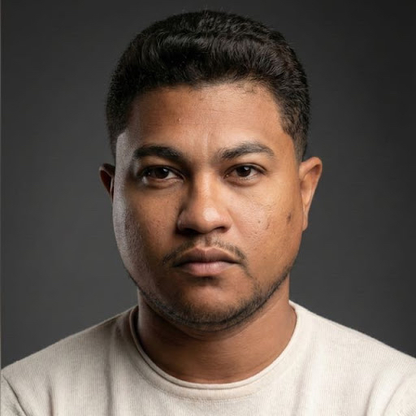

Objetivo: fotos e vídeos reais que mostrem o mini site funcionando na mão de quem vende. Cada cena vira post, carrossel, Reels, anúncio ou foto do próprio mini site. Nada de banco de imagem: o produto aparece sempre na tela de verdade.
Referência de rosto e luz

Retrato de estúdio, fundo cinza grafite, luz lateral suave, camiseta clara lisa. É o padrão da abertura (cena 01) e do fechamento (cena 12).
Figurino e objetos
Camiseta clara lisa + camisa preta lisa (sem logo, sem marca)
Boné só sem nome/marca
2 celulares limpos, sem capinha chamativa, brilho máximo
Mini site de demonstração aberto (sem dados de cliente sem autorização)
Cartão com QR code, caderno, café
Notebook com o site em edição
Cores do set
Fundos e objetos na paleta da marca. Sem carnaval: no máximo 2 cores fortes por cena.
TINTAAZULSOLPAPEL
Locações: estúdio (cenas 1, 8, 9, 12), um comércio parceiro em São Luís (3, 6, 7), mesa de trabalho (4, 5, 10, 11).
Formatos: fotos em 4:5 para o feed; Reels e Stories em 9:16.